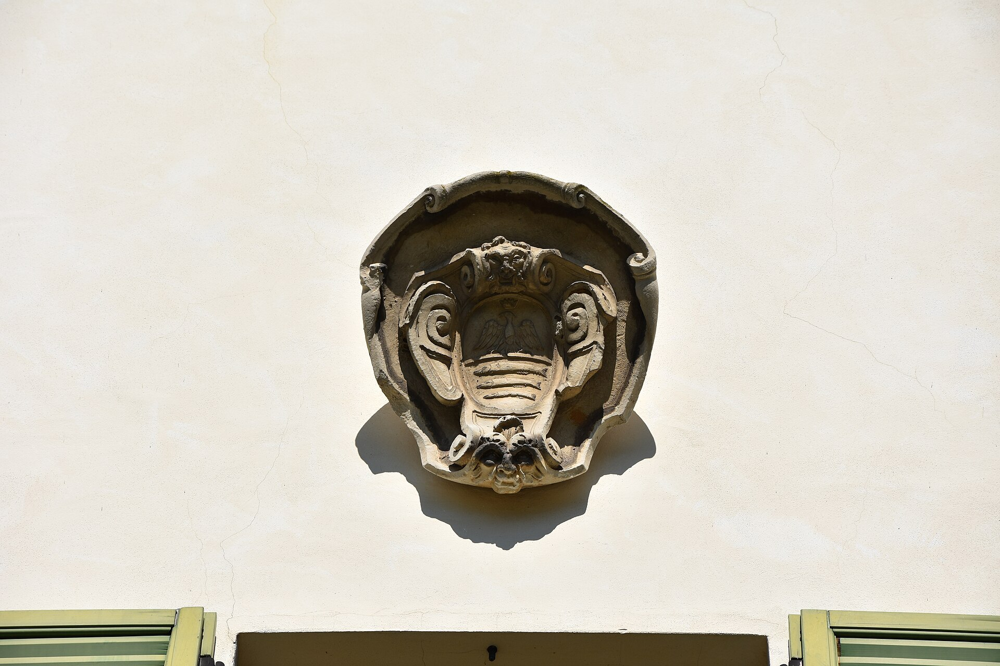

PATRI REALTY · PRÉVIA EDITORIAL · APURAÇÃO 22/10/2026 · NÃO PUBLICADO EM PRODUÇÃO
Passalacqua: três Chaves Michelin no Lago de Como
Em Moltrasio, o Passalacqua transforma uma villa histórica em hotel de pequena escala. Veja o perfil e o que confirmar para planejar a estadia.

Uma villa como ponto de partida
O Michelin apresenta as acomodações distribuídas entre Villa, Palazz e Casa al Lago e associa a operação à família De Santis. A propriedade histórica ajuda a definir a identidade do endereço. A distinção de três Chaves é o critério externo que sustenta sua presença nesta seleção. [1]
Nossa leitura é que uma hospedagem de pequena escala pede uma comparação cuidadosa entre unidades. Não basta escolher o nome do hotel: posição, configuração e características de cada categoria podem ser decisivas para o tipo de estadia desejado.
Planeje a chegada com a mesma atenção da reserva
Para o seu roteiro, peça ao hotel orientação sobre chegada, bagagens, eventuais transferências e acessibilidade. Não assuma que uma conexão pelo lago esteja incluída, disponível em qualquer horário ou adequada a qualquer condição. A recomendação é confirmar a logística para as suas datas.
O site oficial é a referência para serviços, experiências e contato. Diferencie o que está incluído na reserva do que depende de contratação adicional. Ao planejar uma celebração, informe número de pessoas, necessidades e expectativas antes de emitir passagens. [2]
A estação faz parte da escolha
Uma imagem ensolarada não explica como será uma viagem em outra época do ano. Pergunte quais espaços e atividades estarão funcionando no período pretendido e quais dependem do clima. O que importa é o programa possível para a sua estadia, e não um cenário idealizado de campanha.
Nossa sugestão é reservar tempo livre em vez de preencher cada intervalo com deslocamentos. Essa é uma proposta de ritmo de viagem, não uma regra do hotel ou uma promessa de experiência.
Patrimônio, hospitalidade e uma leitura imobiliária
Para o leitor interessado em arquitetura, o caso permite discutir a adaptação de uma propriedade histórica à hospitalidade contemporânea. A discussão deve separar charme visual, exigências de operação e necessidades do hóspede.
A foto desta pauta é de 2019, anterior à abertura do hotel em 2022. Ela documenta a villa, não uma suíte ou um serviço atual. O texto resulta de pesquisa e não de uma hospedagem realizada pela redação.
Perguntas frequentes
Em qual cidade fica o Passalacqua?
Em Moltrasio, no Lago de Como, na Itália. O destino não deve ser confundido com um endereço no município de Como.
Quantas Chaves Michelin tem?
Três Chaves, segundo a ficha consultada em 22 de outubro de 2026.
A fotografia mostra o hotel atual?
É uma fotografia de arquivo da villa, feita em 2019. Não comprova a configuração atual de acomodações ou serviços.
Verbetes
- Villa
- Termo italiano associado a uma residência ou propriedade de determinadas características; não equivale automaticamente a uma categoria de quarto.
- Escala boutique
- Expressão editorial para uma operação de menor escala; não é uma classificação Michelin.
- Villeggiatura
- Tradição de passar uma temporada fora da rotina urbana, associada a descanso e permanência.
Fontes consultadas
Continue a leitura
- Guia Michelin: seis endereços para uma viagem de alto padrão
- Cheval Blanc Paris: três Chaves Michelin junto ao Sena
- Hôtel du Cap-Eden-Roc: três Chaves na Riviera Francesa
Kit de publicação
- Título SEO
- Passalacqua: três Chaves Michelin no Lago de Como
- Meta description
- Em Moltrasio, o Passalacqua transforma uma villa histórica em hotel de pequena escala. Veja o perfil e o que confirmar para planejar a estadia.
- Legenda social
- Uma villa histórica, 24 suítes e o Lago de Como como contexto. O Passalacqua integra nossa curadoria de hotéis com três Chaves Michelin. Veja o que confirmar para escolher a categoria e a época da viagem.